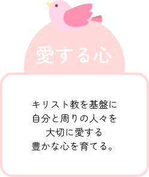
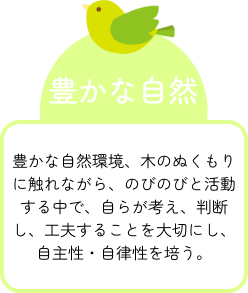
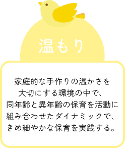
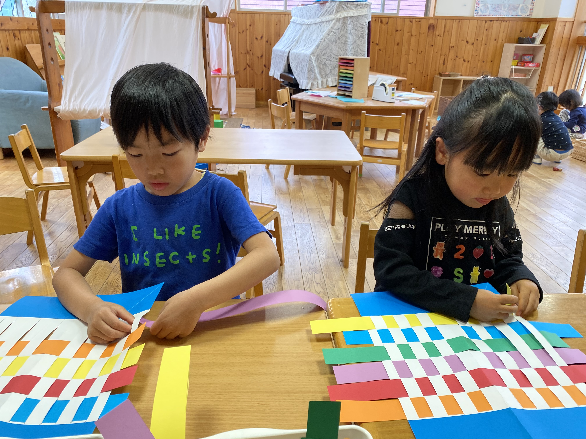
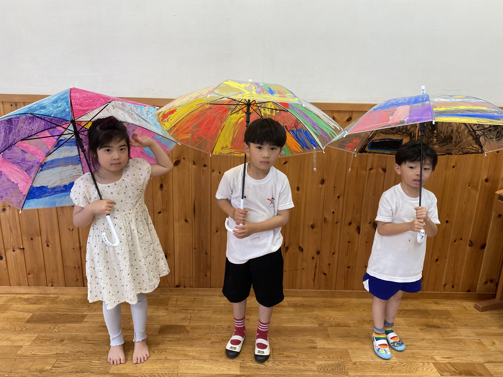
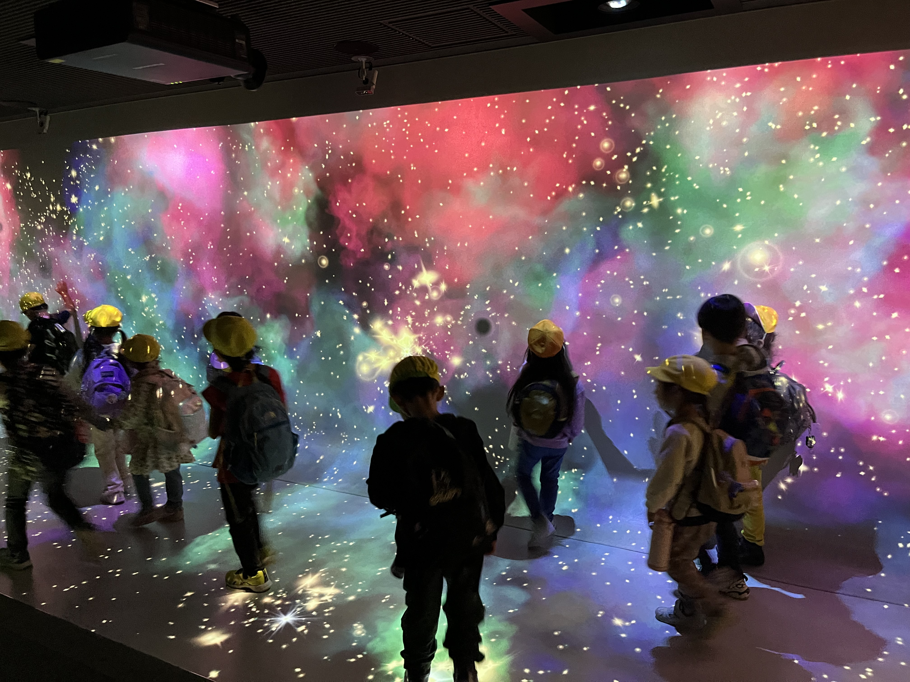
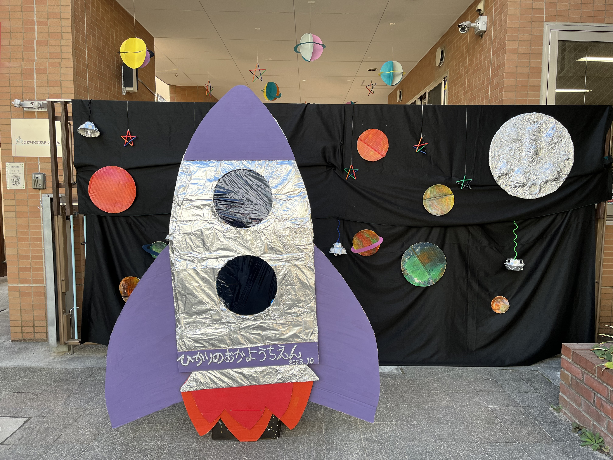

園について
園長挨拶
総主題 「ひかりのこども」聖句（聖書の言葉） 「ひかりの子として歩みなさい」
（新約聖書 エフェソの信徒への手紙５章８節：新共同訳）
神さまが創られ、愛された互いの存在の尊さを知って感謝し、
人と愛し合い、多くの経験を通して共に育ち合う
光の丘幼稚園が神戸山の手に生まれて今年で68年の歴史を刻んできました。
神戸北野坂（異人館界隈）から一歩入った幼稚園の庭では、心地よい風が吹き、春には小鳥たちの歌、夏には蝉の大合唱、秋には虫の鳴き声が聞こえます。
そして一番嬉しいのは、園庭に響く子どもたちの声。裸足になって園庭を走り、大きなくろがねもちの木に登ったり心と体を働かせて遊びが広がります。
幼稚園という場所、それは子どもがはじめて体験する集団生活の場でもあります。
「遊び」の中で、人と関わることの楽しさを感じ、人との考え方、見方の違いを知り、共感したり、ぶつかり合いを経験しながら育っていきます。
そして保育者は一人一人の子どもに関わりながらその子どもの成長に必要な支援をしてゆくのです。
そして当園は神戸バプテスト教会付属幼稚園から始まった、キリスト教保育です。
神様がひとりひとりを大切な価値ある人として愛されていること、ありのままの自分を愛して下さる主イエスの愛を覚えながら、
自分が大事にされているように、他の人も大切であることを知っていくこと、共に育っていくことを願っています。
また、保育では「４・５歳児縦割りクラス」、心静めるチャペルでの「礼拝」、専門講師による「体操教室」、六甲山系への「山登り」、
そしてクリスマスの「降誕劇」を演じ、礼拝を捧げます。
神様の愛の中で光の子として歩んでいきましょう。
学校法人光の丘幼稚園 園長 岡本 恵子
方針
- 
- 
- 
当園では、園と家庭が密接に連携し、一人ひとりの子どもが持つ独自の個性を尊重し、それぞれの自己肯定感を高めていくことに注力しています。
このパートナーシップは、子どもたちが安心して自分自身を表現し、社会の中で自信を持って歩むための基盤を築きます。
定期的なコミュニケーションを通じて、家庭と園が一体となって子どもたちの成長をサポートし、
それぞれのニーズに応じたきめ細やかな注意を払っています。
このように、家庭と園が協力し合うことで、子どもたちは自分を大切にし、周りと調和しながら成長する力を育むことができます。
特色
-

1.キリスト教教育
私たち一人一人を愛して下さっている神さまに 静かに祈る心を大切にします。そして神さまから 愛、勇気、助け合う力をいただいて、 すべてのことを感謝し、 まわりの人々を大切に愛する心を育みます。
-

２．豊かな環境
《四季折々の草花》
幼稚園の敷地には百種類以上の草木が季節ごとに花を咲かせ、実をつけます。
“おしろい花のジュース”“木の実入り土だんご”“キンモクセイのケーキ”…。
子どもたちは料理の天才です。
またチョウチョを追いかけたり、テントウ虫やバッタを見つけたり、セミの抜け殻を集めたり…。
好奇心をいっぱいに働かせて自然の中でたっぷりと遊びます。《ぬくもりのある遊具》 手触りのあたたかな木のおもちゃ。
手作りの人形。手に優しい草木染めの布や羊毛。
子どもたちはこれらの遊具で、想像力豊かに遊びを創りだしてゆきます。 -

３．年齢別活動（クラス活動）
３歳児の日常の保育は、年齢の課題と安定を考え、年齢別クラス活動を進めています。 また４、５歳児も各年齢の成長段階の特徴を十分に考え、 例えば体操教室、一泊キャンプ（年長）などは年齢別で活動しています。
-

４．異年齢混合活動
子どもにとって、同年齢の友達はもちろんですが、 年齢の異なる子どもたちとの交わりも、社会性 （遊びのルールや思いやりなど）を身につけたり、 遊びを伝承したりしていく上で必要です。
兄弟の人数が減り、地域での縦の関係も薄れ行く 中、園での生活でお互いが刺激しあい成長 してゆく異年齢の活動を大切に考えています。 -
５．自由遊び
保育室内に常時設置してある「おままごと」
「木のおもちゃ」コーナーなどに加えて、
季節ごとに設置される「遊びのコーナー」
（「にじみ絵」「染めもの」など）の中から子どもが自由に遊び、そこでのびのびと遊びます。
保育者は最低限の助言はしますが、
はじめから子どものイメージを固定することはしません。
子どもたちは自ら考え、判断し、
工夫をこらして行動する中で成長します。 -

６．体力づくり
全身を動かす運動や遊びによって、知的活動も活発になります。同時に情緒の安定や社会性の発達が見られます
園庭での様々な遊び、木登り、体育教室、プールに加え、近くの山などに出かける園外保育も、季節の変化などを学びながらの体力づくりとして積極的に行っています。
《山登り》…四季折々の六甲山系（布引の滝など）へ山登りに出かけます。春は新緑の匂い、夏はセミの 声、秋は紅葉を楽しみ、冬は枯れ葉を踏みながらの楽しい山登りです。
《体操教室》…体育講師の指導のもとに週一回、年齢別にクラスを持ちます。毎回一つの目的を持ち、ボールやマット、飛び箱などに親しみながら、からだをいっぱいに動かします。
《プール》…夏季にはプールを使って、太陽の下で思い切り水遊びをします。 -
７．良い絵本に親しむ
テレビやビデオは、子どもたちから考える意欲と想像力とを奪ってしまいます。
当園では、良い絵本を多数（2,000冊）備え、保育の中で読み聞かせの時間を大切にしており、週一回、貸し出しも行っています。
良い絵本は子どもたちの想像力・感受性を豊かにし聴く心を育てます。
絵本（物語）の楽しさ、素晴らしさを親子で味わってほしいと願っています。 -
８．あそびのひろば
表現あそび、わらべうた遊び、絵画製作など様々な遊びに触れ、深めていきます。
-

９．服装・持ち物
制服制帽はありません。遊びやすい服装、使いやすい物をお選びください。
-
１０．手作りお弁当
愛情のこもったお弁当をいただく時間は、神さまと両親への感謝を育てる時でもあります。
-
１１．保護者会・親子学級
育児についての研修会などを行っています。また行事などの参加を通して幼稚園と家庭との連携を大切にしています。
-

１２．送り迎えのときを大切に
家族の方と一緒に同じものを見たり感じたり、話しながら登園・降園する時間は子どもにとって貴重です。
また保育の直後に、保育者が家族の方と顔を合わせてその日の様子をお伝えし、
子どもが家族の方とその日の経験を分かち合いながら帰ることは、子どもの明日への力となります。
お問い合わせ
ご質問やご意見等のお問合せはお電話、フォームからお願いしております。

お電話でお問い合わせ
受付時間 月曜日〜金曜日 00:00 〜 00:00

フォームでのお問い合わせ
24時間受付 お気軽にどうぞ！